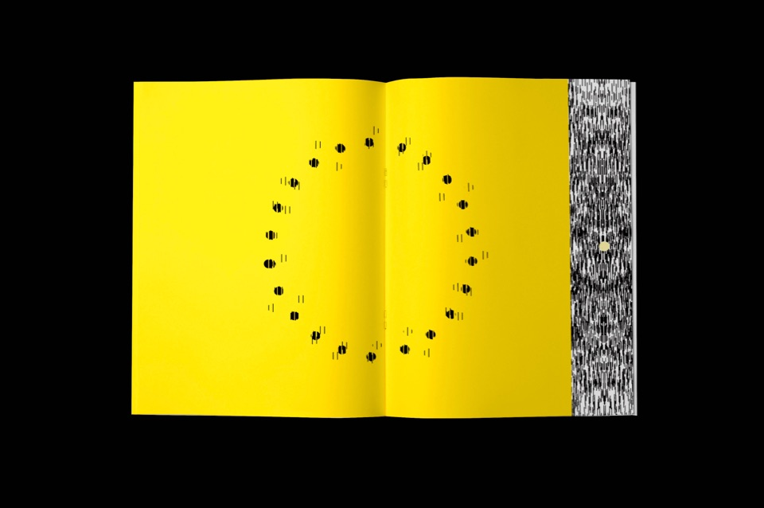

PROYECTO PERSONAL - AÑO - 2018
EXTINCIÓN - EXISTENCIA es un libro interactivo que utiliza distintos
recursos y materiales como tramas lineales, y acetato para generar un
movimiento, con una narrativa específica. La narrativa de este libro,
habla acerca del contraste de cómo mientras la naturaleza y los animales
se extinguen, la población humana se incrementa. Debido a esto, el libro
tiene “doble portada” o doble narrativa; es decir, al momento de
abrirlo, por el lado que sea, la narrativa se definirá dependiendo de el
lector. Además de esto, decidí hacer la portada en un papel reflejante,
para que al momento de agarra el libro, te veas reflejado a ti mismo y
así, crear conciencia de que nosotros somos los responsables por esta
extinción.
